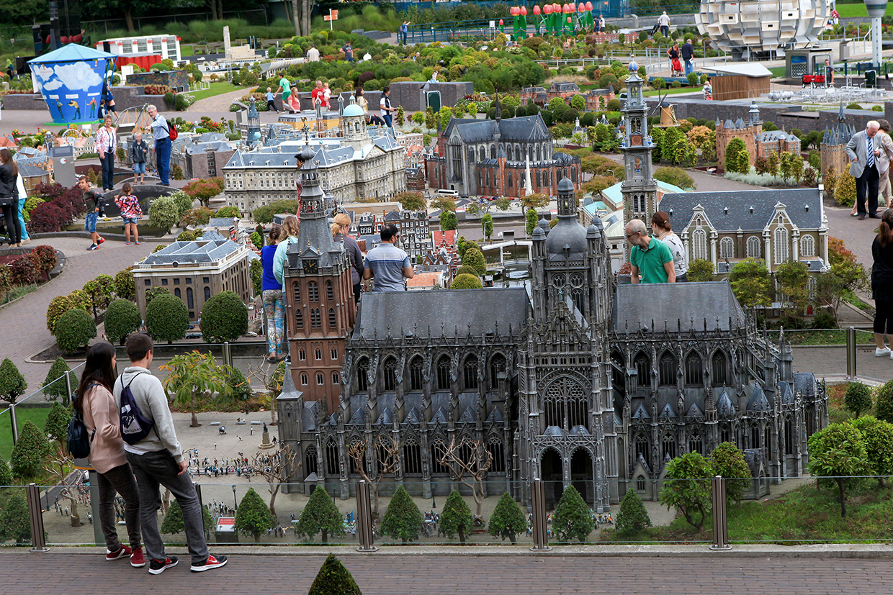

Volendam
Volendam està principalment destacat pel seu passeig marítim, en ell es troben diverses tendes de fotografia, en les quals es lloguen roba tradicional perquè els turistes es facin fotos amb elles, ja que una de les seves característiques són els seus vestits tradicionals. Es troba a tan sols 20 minuts d'Amsterdam, per la seva proximitat, és una de les millors opcions per veure coses diferents a part d'Amsterdam, una d'elles, és que a primera vista es pot observar un ambient totalment diferent, més tradicional, entre moltes altres tradicions, estan les granges de formatge i els esclops.

Madurodam
Malgrat ser la ciutat més petita d'Holanda, alhora, resulta una de les més impressionants i originals, es tracta d'un parc temàtic fet a força d'estructures reals a escala, maquetes fetes a la perfecció en tot el seu al voltant, monuments, torres, palaus... tot fet a escala, 25 vegades més petit que en la realitat. A més en ell es poden trobar, vaixells, trens, fins i tot personatges que van recorrent els carrers, resulta sens dubte una visita molt recomanable.

La Haia
A 60 quilòmetres del sud-oest d'Amsterdam, es troba la Haia, on es situa el parlament holandès, el qual es pot visitar amb normalitat, i sembla com menys curiós de veure, a més que en el seu interior es troba la Sala dels Cavallers. Després tenim l'avinguda Lange Voorhout, es tracta d'un carrer ple d'arbres, la qual cosa li fa tenir un toc especial, i és sens dubte un bon lloc per fer fotografies, a més en aquesta avinguda es troben diversos edificis governamentals, entre els quals, està l'ambaixada d'Espanya.
Utrecht
Utrecht és considerada una de les ciutats més impressionants dels Països Baixos, es troba a 40 quilòmetres del sud-est d'Amsterdam, i entre una de les seves curiositats, és que compta amb la universitat més gran de tot el país, en aquesta ciutat també podrem veure la Torre Dom, que compta amb ni més ni menys que 120 metre d'altura. Però si hi ha alguna cosa pel que destaqui Utrecht és per la quantitat de gent jove, i pel constant ambient que es respira a la ciutat. També cal tenir en compte, que molts dels punts d'interès i museus d'Amsterdam, tenen un horari una mica limitat, per la qual cosa visitar aquesta ciutat és una bona opció quan et trobis sense res que fer.